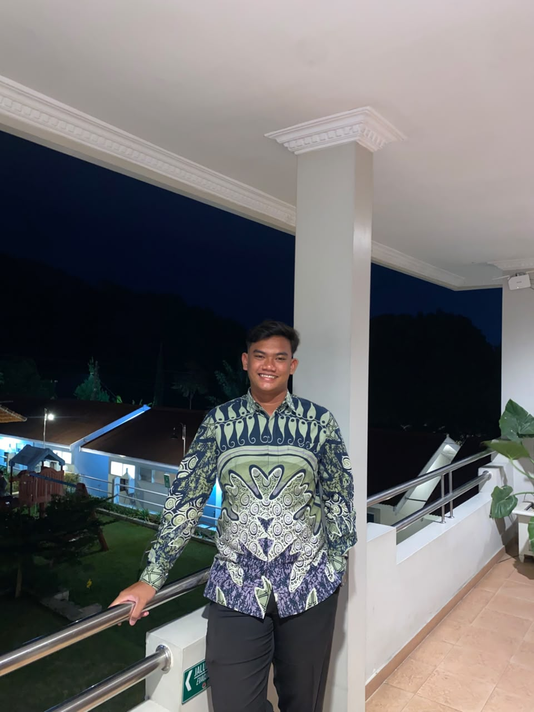

Halo! Saya adalah mahasiswa Program Studi Informatika di Fakultas Sains dan Teknologi Universitas PGRI Yogyakarta. Halaman ini dibuat sebagai pengembangan dari tugas Desain Web dan Pengenalan Framework untuk menampilkan informasi profil pribadi serta portofolio akademik secara lebih mendetail.
| Tahun / Periode | Institusi / Kegiatan | Keterangan |
|---|---|---|
| 2025 - Sekarang | Universitas PGRI Yogyakarta | Mahasiswa S1 Program Studi Informatika (FST) |
| 2026 | Praktikum Basis Data & Desain Web | Membuat proyek sistem antrean berbasis Java serta perancangan halaman web responsif. |